Basic concepts
Lviv University
Introduction
Goal
- simulate original research from 1960s
- hand-design an end-to-end visual system.
- cover some of the main concepts
History
Seymour Papert (1966)
“The summer vision project is an attempt to use our summer workers effectively in the construction of a significant part of a visual system.”
Warning
Too optimistic!
Problem setup
Vision has many different goals:
- object recognition
- scene interpretation
- three-dimensional [3D] interpretation
A Simple World: The Blocks World
Simple world
Block world
Introduced by Larry G. Roberts in 1963.
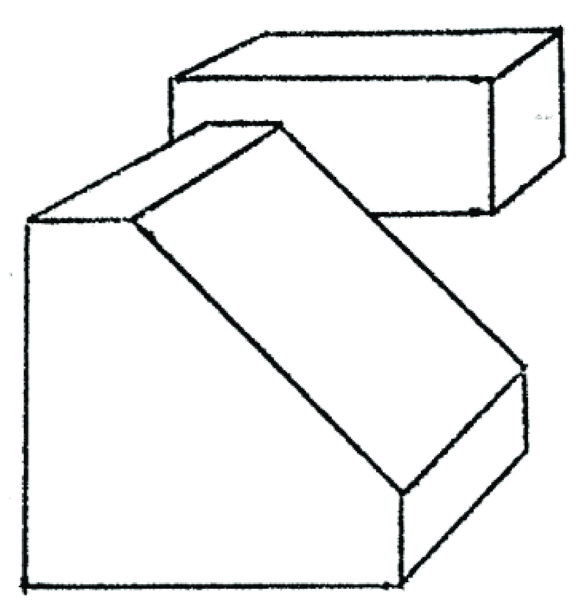
Simple world
Description
- world is composed of a very simple (yet varied) set of objects.
- these simple objects are composed of flat surfaces that can be horizontal or vertical
- these objects will be resting on a white horizontal ground plane
- we can build these objects by cutting, folding, and gluing together some pieces of colored paper
A Simple Image Formation Model
A Simple Image Formation Model
Parallel of orthographic projection
- light rays travel parallel to each other and perpendicular to the camera plane
- this type of projection produces images in which objects do not change size as they move closer or farther from the camera
- parallel lines in 3D remain parallel in the 2D image.
A Simple Image Formation Model
Perspective projection
- the image is formed by the convergence of the light rays into a single point (focal point).
- most pictures taken with a camera will be better described by perspective projection
A Simple Image Formation Model

A Simple Image Formation Model
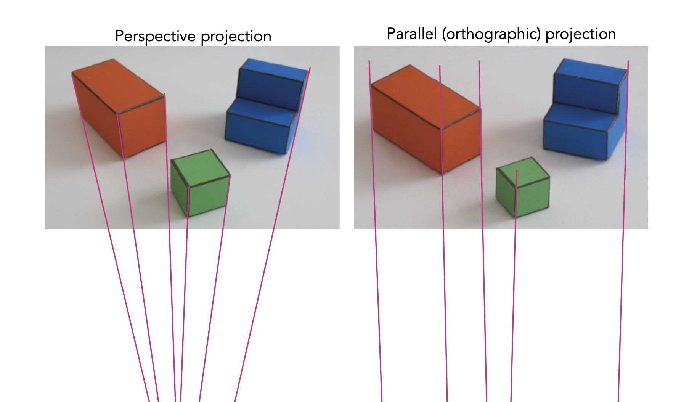A Simple Image Formation Model
- how a point in world coordinates \((X,Y,Z)\) projects into the image plane
- camera center is inside the 3D plane \(X=0\)
- the horizontal axis of the camera (\(x\)) is parallel to the ground plane (\(Y=0\))
- the camera is tilted so that the line connecting the origin of the world coordinates system and the image center is perpendicular to the image plane
- the angle \(\theta\) is the angle between this line and the \(Z\)-axis
- the image is parameterized by coordinates \((x,y)\).
A Simple Image Formation Model
A Simple Image Formation Model
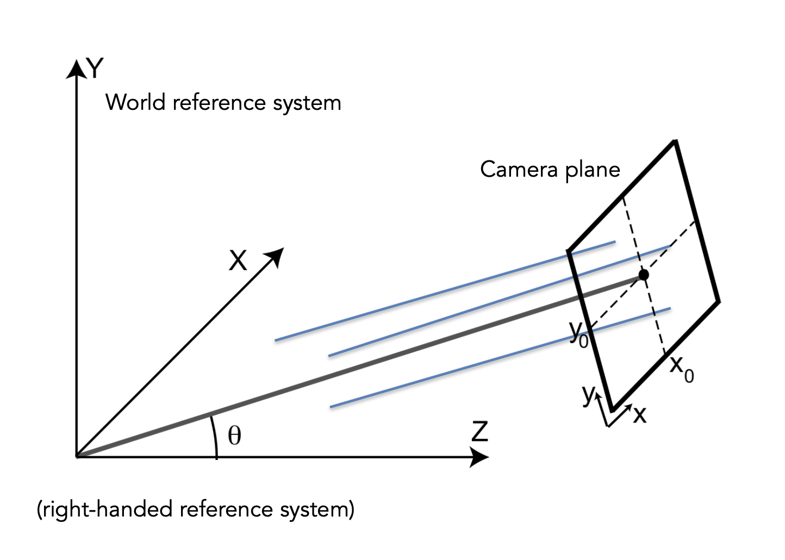A Simple Image Formation Model
Features
- the origin of the world coordinates projects on the origin of the image coordinates
- therefore, the world point \((0,0,0)\) projects into \((0,0)\)
- the resolution of the image will also affect the transformation from world coordinates to image coordinates via a constant factor \(\alpha\)
- for now we assume that pixels are square and we will see a more general form in ) and that this constant is \(\alpha=1\).
A Simple Image Formation Model
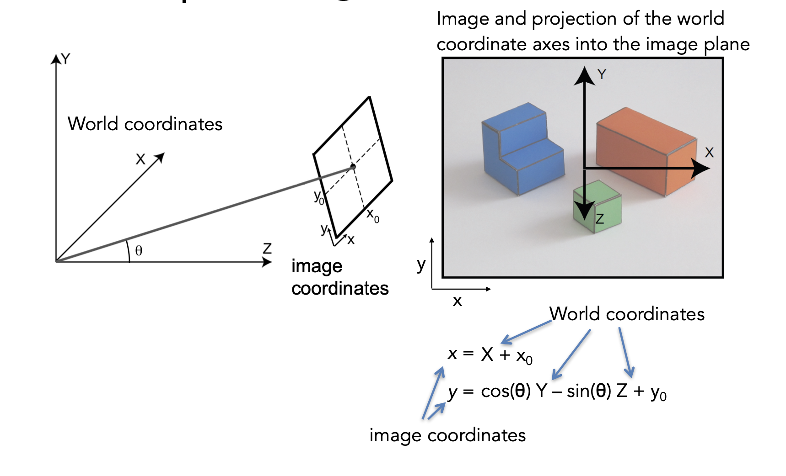A Simple Image Formation Model
Coordinate transformation
The transformation between world coordinates and image coordinates can be written as follows:
\[\begin{aligned} x &=& X \\ y &=& \cos(\theta) Y - \sin(\theta) Z \end{aligned} \qquad(1)\]
From Images to Edges and Useful Features
A Simple Goal
Our goal
- recovering the world coordinates of all the pixels seen by the camera.
Non-goal
- recover the actual color of the surface seen by each pixel \((x,y)\)
(requires discounting for illumination effects as the color of the pixel is a combination of the surface albedo and illumination (color of the light sources and interreflections).
From Images to Edges
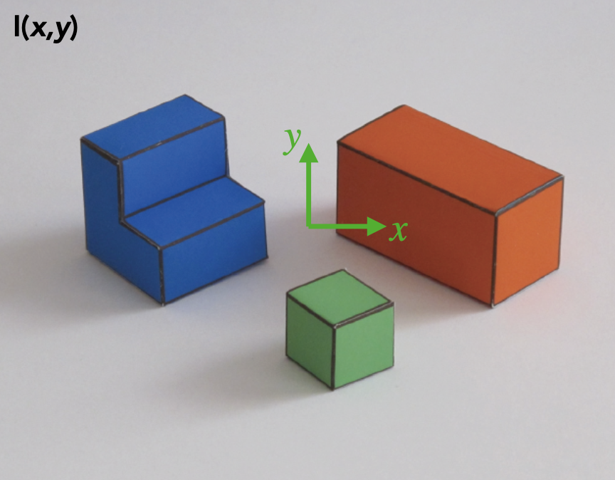
From Images to Edges
The observed image is a function: \[\ell(x,y)\]
Description
- input: location, \((x,y)\)
- output: the intensity at that location.
What is an image?
In this representation, the image is an array of intensity values (color values) indexed by location.
From Images to Edges
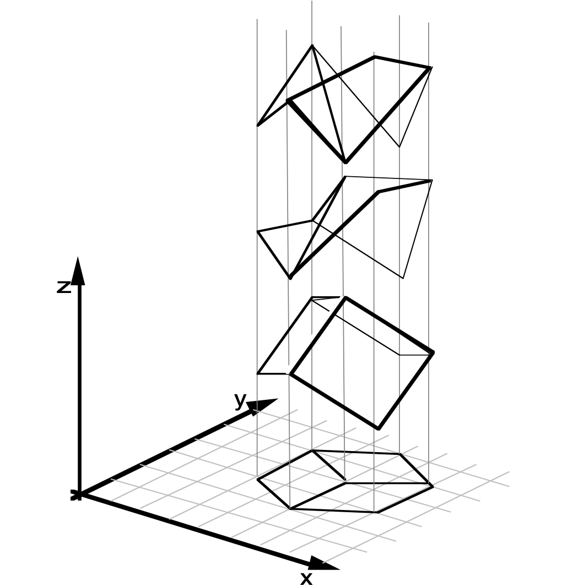
Any planar line-drawing is geometrically consistent with infinitely many 3-D structures (Sinha-Adelson ’93 paper)
From Images to Edges
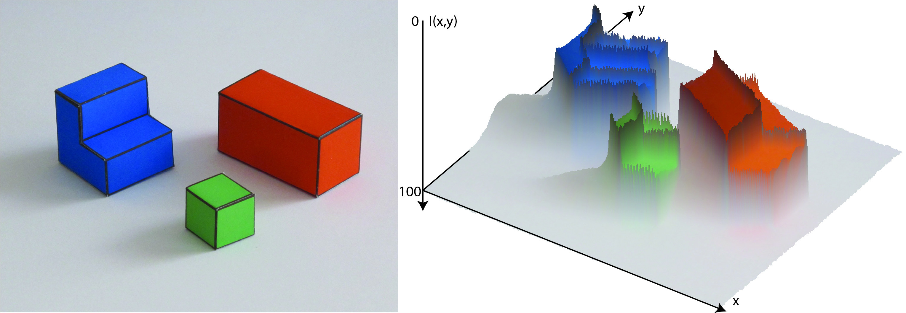Figure 4: Image as a surface. The vertical axis corresponds to image intensity. For clarity here, we have reversed the vertical axis. Dark values are shown higher than lighter values.
From Images to Edges
Benefits
- this representation is ideal for determining the light intensity originating from different directions in space and striking the camera plane, as it provides explicit representation of this information
- the array of pixel intensities, \(\ell(x,y)\), is a reasonable representation as input to the early stages of visual processing because, although we do not know the distance of surfaces in the world, the direction of each light ray in the world is well defined.
Alternative options
Other initial representations:
- images could be coded in the Fourier domain
- pixels could combine light coming in different directions.
From Images to Edges
Note
We are interested in interpreting the 3D structure of the scene and the objects within.
Challenges
Need to represent:
- boundaries between objects
- changes in the surface orientation
From Images to Edges
Alternative representation
For scene interpretation:
- collections of small image patches
- regions of uniform properties
- edges
From Images to Edges
Alternative initial representations
Gekko’s eye. Their pupil has a four-diamond-shaped pinhole aperture that could allow them to encode distance to a target in the retinal image.
From Images to Edges
What is an edge
An image regions where there are strong changes of the image with respect to location.
Edge factors
- occlusion boundaries
- changes in surface orientation
- changes in surface albedo
- shadows
From Images to Edges
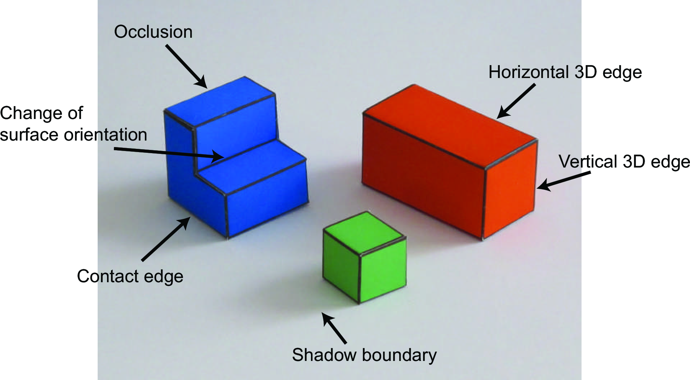Figure 5
From Images to Edges
Image edge classification
Object boundaries: These indicate pixels that delineate the boundaries of any object. Boundaries between objects generally correspond to changes in surface color, texture, and orientation.
Changes in surface orientation: These indicate locations where there are strong image variations due to changes in the surface orientations. A change in surface orientation produces changes in the image intensity because intensity is a function of the angle between the surface and the incident light.
Shadow edges: This can be harder than it seems. In this simple world, shadows are soft, creating slow transitions between dark and light.
From Images to Edges
Object boundary classification
Contact edges: This is a boundary between two objects that are in physical contact. Therefore, there is no depth discontinuity.
Occlusion boundaries: Occlusion boundaries happen when an object is partially in front of another. Occlusion boundaries generally produce depth discontinuities. In this simple world, we will position the objects in such a way that objects do not occlude each other but they will occlude the background.
From Images to Edges
Challenges
- in most natural scenes, this classification is very hard
- requires the interpretation of the scene at different levels.
From Images to Edges
First step: detecting candidate edges in the image.
If we think of the image as a function \(\ell (x,y) \in C(\mathbb{R}^2)\), we can measure the degree of variation using the gradient:
\[\begin{aligned} \nabla \ell = \left( \frac{\partial \ell}{\partial x}, \frac{\partial \ell}{\partial y} \right) \end{aligned}\]
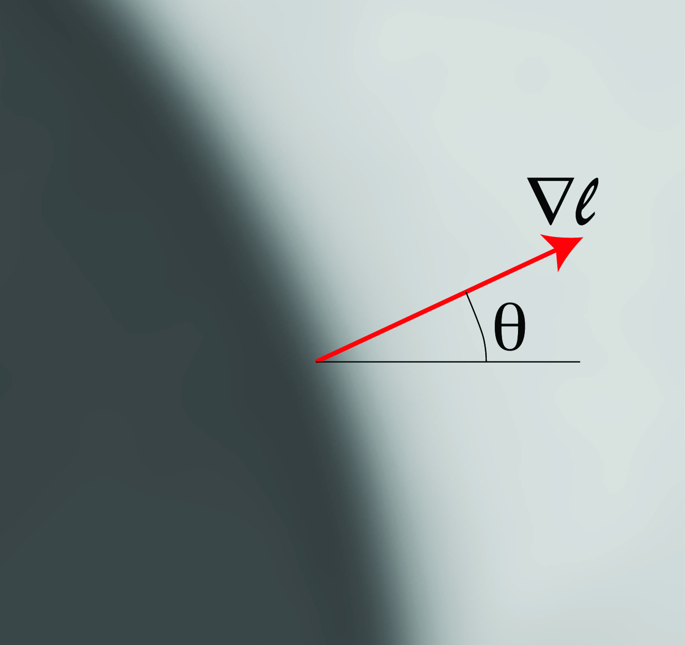
From Images to Edges
Important
The image is not a continuous function as we only know the values of the \(\ell (x,y)\) at discrete locations (pixels).
Approximation
We approximate the partial derivatives by:
\[\begin{aligned} \frac{\partial \ell}{\partial x} &\simeq \ell(x,y) - \ell(x-1,y) \\ \frac{\partial \ell}{\partial y} &\simeq \ell(x,y) - \ell(x,y-1) \end{aligned} \qquad(2)\]
From Images to Edges
Better approximation (TBD)
Combine the image pixels around \((x,y)\) with the weights: \[\begin{aligned} \frac{1}{4} \times \left [ \begin{matrix} -1 & 0 & 1 \\ -2 & 0 & 2 \\ -1 & 0 & 1 \end{matrix} \right ] \nonumber \end{aligned}\]
From Images to Edges
Edge properties
From the image gradient, we can extract a number of interesting quantities: \[\begin{aligned} e(x,y) &= \lVert \nabla \ell(x,y) \rVert & \quad\quad \triangleleft \quad \texttt{edge strength}\\ \theta(x,y) &= \angle \nabla \ell = \arctan \left( \frac{\partial \ell / \partial y}{\partial \ell / \partial x} \right) & \quad\quad \triangleleft \quad \texttt{edge orientation} \end{aligned}\]
Note
- edge strength is the gradient magnitude
- edge orientation is perpendicular to the gradient direction
From Images to Edges
The unit norm vector perpendicular to an edge is:
\[\begin{aligned} {\bf n} = \frac{\nabla \ell}{\lVert \nabla \ell \rVert} \end{aligned}\]
From Images to Edges
Decision
Which pixels belong to:
- edges (regions of the image with sharp intensity variations)
- uniform regions (flat surfaces)
How?
By thresholding the edge strength \(e(x,y)\).
In the pixels with edges, we can also measure the edge orientation \(\theta(x,y)\).
From Images to Edges
From Images to Edges
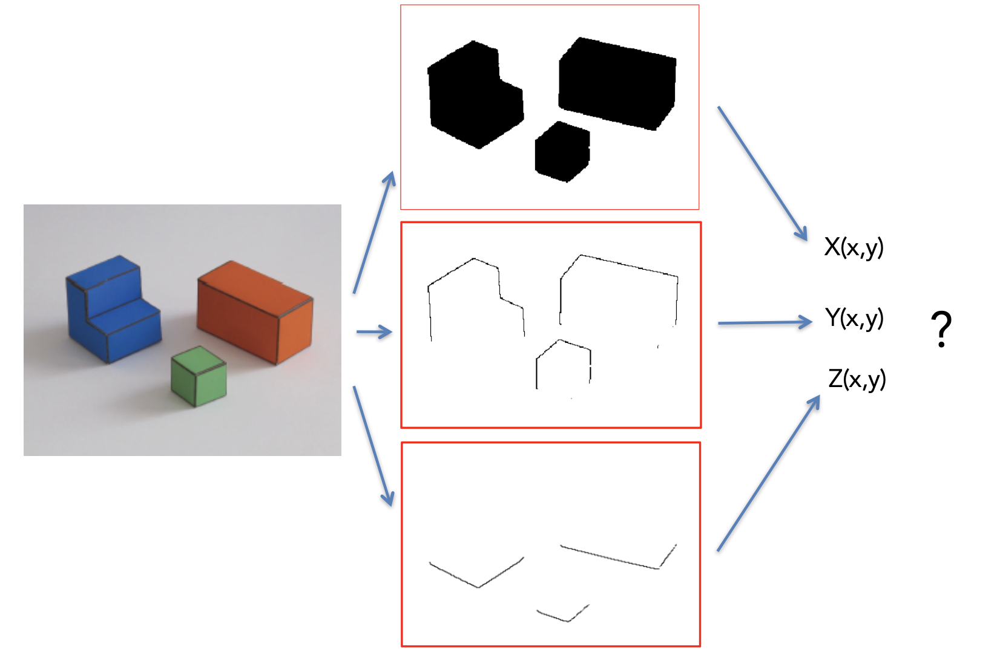From Edges to Surfaces
From Edges to Surfaces
Objective
We want to recover world coordinates \(X(x,y)\), \(Y(x,y)\), and \(Z(x,y)\) for each image location \((x,y)\)
Steps
- recovering the \(X\) world coordinates is trivial as they are directly observed: for each pixel with image coordinates \((x,y)\) the world coordinate is \(X(x,y) = x\)
- recovering \(Y\) and \(Z\) will be harder as we only observe a mixture of the two world coordinates.
From Edges to Surfaces
Figure/Ground Segmentation
Segmentation of an image into figure and ground is a classical problem in human perception and computer vision that was introduced by Gestalt psychology.
From Edges to Surfaces
Segmentation: goal
Decide whether a pixel belongs to one of the foreground objects or to the background.
Segmentation: basic approach
We can simply look at the color values of each pixel
- bright pixels that have low saturation (similar values of the red-blue-green [RBG] components) correspond to the white ground plane
- and the rest of the pixels are likely to belong to the colored blocks that compose our simple world
From Edges to Surfaces
Background
If we assume that the background corresponds to a horizontal ground plane, then for all pixels that belong to the ground we can set \(Y(x,y)=0\).
Objects
For pixels that belong to objects we will have to measure additional image properties before we can deduce any geometric scene constraints.
From Edges to Surfaces
Occlusion Edges
An occlusion boundary separates two different surfaces at different distances from the observer.
The object in front is the one owning the boundary.
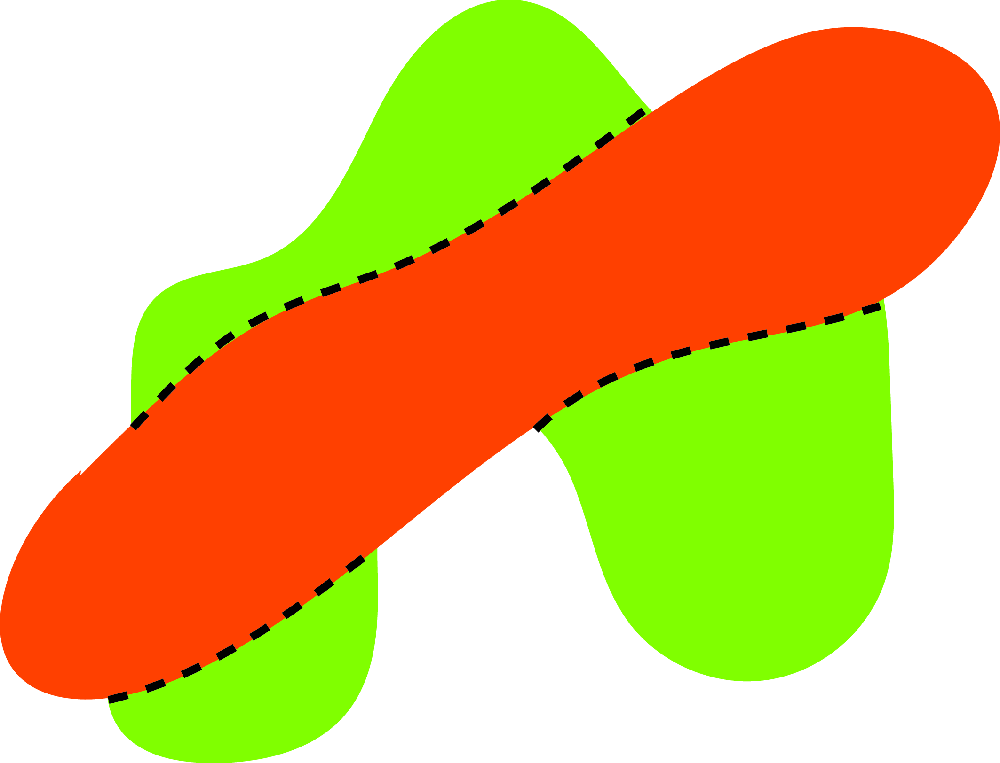
From Edges to Surfaces
Assumption
In this simple world, we will assume that objects do not occlude each other (this can be relaxed) and that the only occlusion boundaries are the boundaries between the objects and the ground.
Note
Not all boundaries between the objects and the ground correspond to depth gradients.
From Edges to Surfaces
Contact Edges
Contact edges are boundaries between two distinct objects but where there exists no depth discontinuity.
Despite that there is not a depth discontinuity, there is an occlusion here (as one surface is hidden behind another), and the edge shape is only owned by one of the two surfaces.
Calculation
If we assume that all the objects rest on the ground plane, then we can set \(Y(x,y)=0\) on the contact edges.
Contact edges can be detected as transitions between the object (above) and ground (below). In our simple world only horizontal edges can be contact edges.
From Edges to Surfaces
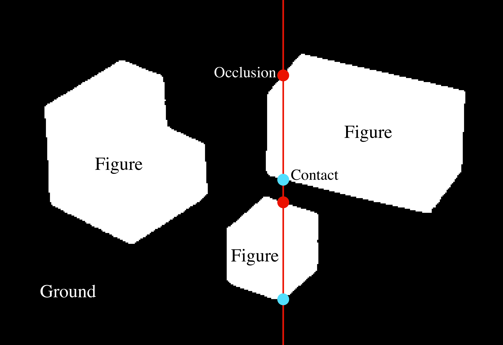Figure 8: For each vertical line (shown in red), scanning from top to bottom, transitions from ground to figure are occlusion boundaries, and transitions from figure to ground are contact edges. This heuristic will fails when an object occludes another.
From Edges to Surfaces
Invariant Scene Properties (world \(\rightarrow\) image)
Collinearity: a straight 3D line will project into a straight line in the image.
Cotermination: if two or more 3D lines terminate at the same point, the corresponding projections will also terminate at a common point.
Smoothness: a smooth 3D curve will project into a smooth 2D curve.
From Edges to Surfaces
Reverse invariants (image \(\rightarrow\) world)
- a straight line in the image could correspond to a curved line in the 3D world but that happens to be precisely aligned with respect to the viewers point of view to appear as a straight line
- two lines that intersect in the image plane could be disjointed in the 3D space.
From Edges to Surfaces
Reverse invariants (image \(\rightarrow\) world)
- if two lines coterminate in the image, then, one can conclude that it is very likely that they also touch each other in 3D
- if the 3D lines do not touch each other, then it will require a very specific alignment between the observer and the lines for them to appear to coterminate in the image. Therefore, one can safely conclude that the lines might also touch in 3D.
From Edges to Surfaces
Nonaccidental properties
These properties are called nonaccidental properties because they will only be observed in the image if they also exist in the world or by accidental alignments between the observer and scene structures.
Generic view
Under a generic view, nonaccidental properties will be shared by the image and the 3D world.
From Edges to Surfaces
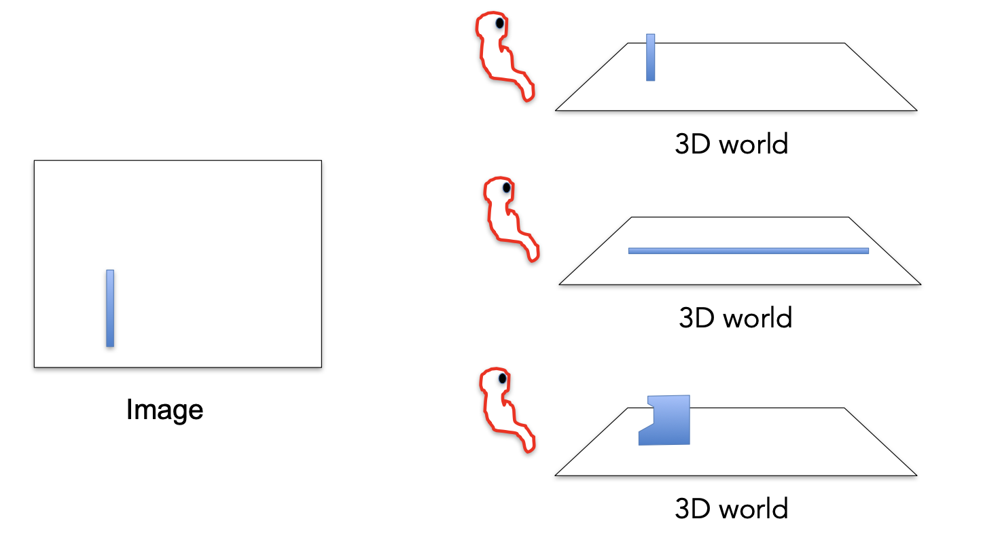
From Edges to Surfaces
Application to simple world
- in the simple world all 3D edges are either vertical or horizontal
- under parallel projection and with the camera having its horizontal axis parallel to the ground, we know that vertical 3D lines will project into vertical 2D lines in the image
- horizontal lines will, in general, project into oblique lines
- therefore, we can assume than any vertical line in the image is also a vertical line in the world.
From Edges to Surfaces
Challenge
The assumption that vertical 2D lines are also 3D vertical lines will not always work!
From Edges to Surfaces
Formulation
We can now translate the inferred 3D edge orientation into linear constraints on the global 3D structure. We will formulate these constraints in terms of \(Y(x,y)\). Once \(Y(x,y)\) is recovered we can also recover \(Z(x,y)\) from Equation 1.
In a 3D vertical edge, using the projection equations, the derivative of \(Y\) along the edge will be
\[\begin{aligned} \partial Y / \partial y &= 1/ \cos(\theta)\end{aligned} \qquad(3)\]
From Edges to Surfaces
Formulation
In a 3D horizontal edge, the coordinate \(Y\) will not change. Therefore, the derivative along the edge should be zero:
\[\begin{aligned} \partial Y / \partial {\bf t} &= 0 \end{aligned} \qquad(4)\]
where the vector \(\bf t\) denotes direction tangent to the edge, \({\bf t}=(-n_y, n_x)\).
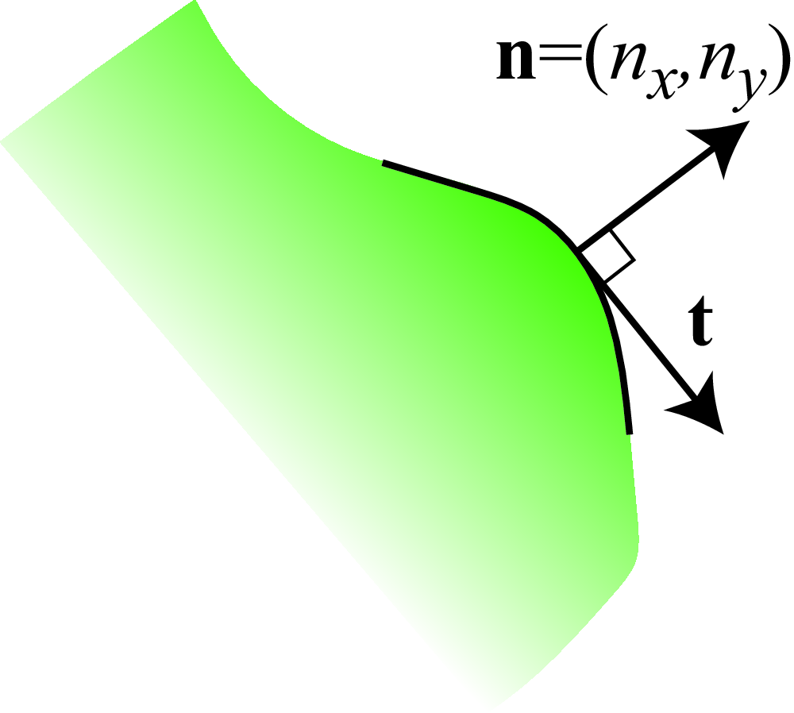
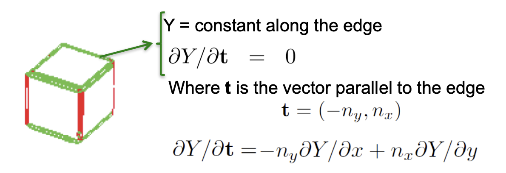
From Edges to Surfaces
Formulation
We can write this derivative as a function of derivatives along the \(x\) and \(y\) image coordinates: \[\begin{aligned} \partial Y / \partial {\bf t} = \nabla Y \cdot {\bf t} = -n_y \partial Y / \partial x + n_x \partial Y / \partial y \end{aligned} \qquad(5)\]
When the edges coincide with occlusion edges, special care should be taken so that these constraints are only applied to the surface that owns the boundary.
From Edges to Surfaces
Approximation
We represent the world coordinates \(X(x,y)\), \(Y(x,y)\), and \(Z(x,y)\) as images where the coordinates \(x,y\) correspond to pixel locations.
Therefore, it is useful to approximate the partial derivatives in the same way that we approximated the image partial derivatives in equations (Equation 2). Using this approximation, Equation 3 can be written as follows: \[\begin{aligned} Y(x,y)-Y(x,y-1) &= 1/ \cos(\theta) \end{aligned}\]
Similar relationships can be obtained from equations Equation 4 and Equation 5.
From Edges to Surfaces
No edges
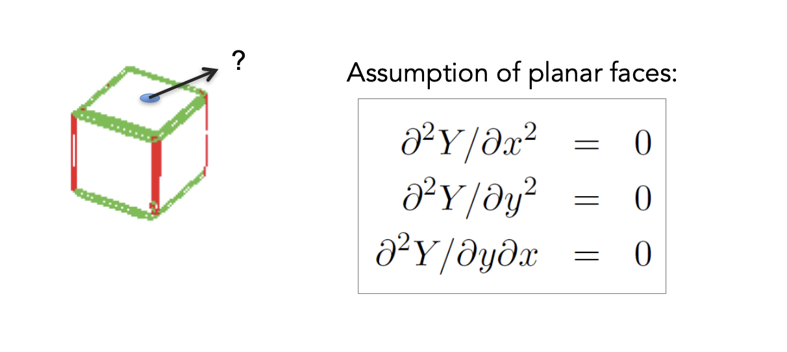
From Edges to Surfaces
Constraint Propagation
Most of the image consists of flat regions where we do not have such edge constraints and we thus don’t have enough local information to infer the surface orientation.
Therefore, we need some criteria in order to propagate information from the boundaries, where we do have information about the 3D structure, into the interior of flat image regions.
Note
This problem is common in many visual domains.
From Edges to Surfaces
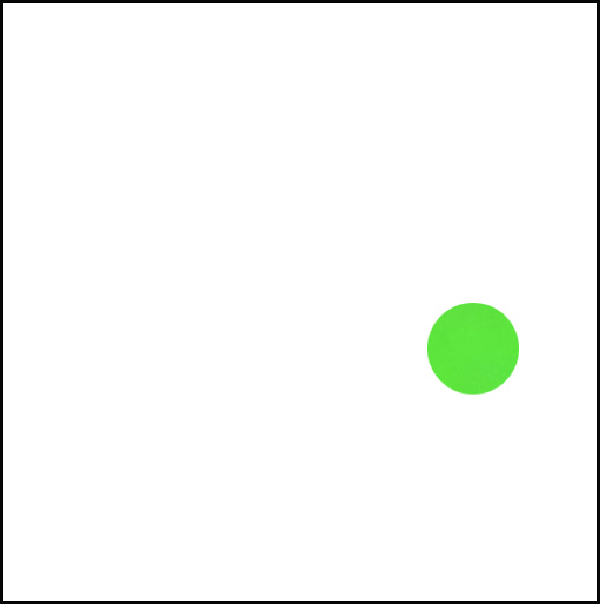
An image patch without context is not enough to infer its 3D shape.
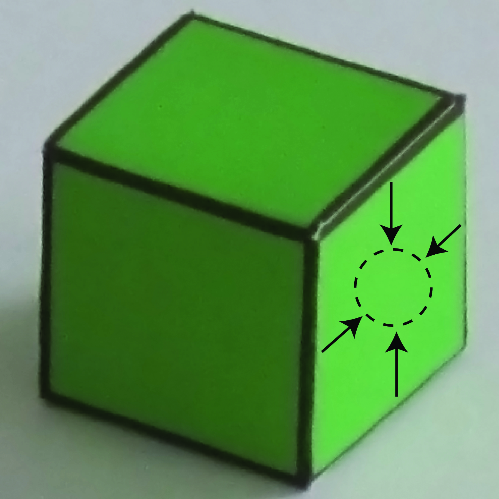
The same patch shown in the original image. Information about its 3D orientation its propagated from the surrounding edges.
From Edges to Surfaces
Assumption
In this case we will assume that the object faces are planar. Thus, flat image regions impose the following constraints on the local 3D structure: \[\begin{aligned} \partial^2 Y / \partial x^2 &= 0 \\ \partial^2 Y / \partial y^2 &= 0 \\ \partial^2 Y / \partial y \partial x &= 0 \end{aligned}\]
That is, the second order derivative of \(Y\) should be zero. As before, we want to approximate the continuous partial derivatives.
From Edges to Surfaces
Approximation
The approximation to the second derivative can be obtained by applying twice the first order derivative approximated by equations (Equation 2). The result is
\[\partial^2 Y / \partial x^2 \simeq 2Y(x,y)-Y(x+1,y)-Y(x-1,y), \] and similarly for \(\partial^2 X / \partial x^2\).
From Edges to Surfaces
A Simple Inference Scheme
Equation system
All the different constraints described previously can be written as an overdetermined system of linear equations. Each equation will have the form: \[\begin{aligned} \mathbf{a}_i \mathbf{Y} = b_i \end{aligned}\]
where \(\mathbf{Y}\) is a vectorized version of the image \(Y\) (i.e., all rows of pixels have been concatenated into a flat vector).
Note
There might be many more equations than there are image pixels.
From Edges to Surfaces
Translation
We can translate all the constraints described in the previous sections into this form:
- for instance, if the index \(i\) corresponds to one of the pixels inside one of the planar faces of a foreground object, then there will be three equations
- one of the planarity constraint can be written as \[\mathbf{a}_i = [0, \dots, 0, -1, 2, -1, 0, \dots, 0], \, b_i=0,\] and analogous equations can be written for the other two.
From Edges to Surfaces
How to solve?
We can solve the system of equations by minimizing the following cost function: \[\begin{aligned} J = \sum_i (\mathbf{a}_i\mathbf{Y} - b_i)^2 \end{aligned}\] where the sum is over all the constraints.
Weights
If some constraints are more important than others, we can use weights \(w_i\). \[\begin{aligned} J = \sum_i w_i (\mathbf{a}_i \mathbf{Y} - b_i)^2 \end{aligned}\]
From Edges to Surfaces
Note
Our formulation has resulted on a big system of linear constraints (there are more equations than there are pixels in the image).
System of equations
It is convenient to write the system of equations in matrix form: \[\begin{aligned} \mathbf{A} \mathbf{Y} = \mathbf{b} \end{aligned}\]
where row \(i\) of the matrix \({\bf A}\) contains the constraint coefficients \(\mathbf{a}_i\).
The system of equations is overdetermined (\(\mathbf{A}\) has more rows than columns).
From Edges to Surfaces
Solution
We can use the pseudoinverse to compute the solution:
\[\begin{aligned} \bf Y = (\mathbf{A}^T \mathbf{A})^{-1} \mathbf{A}^T \mathbf{b} \end{aligned}\]
This problem can be solved efficiently as the matrix \(\mathbf{A}\) is very sparse (most of the elements are zero).
Results
Results
What do we get?
There are a few things to reflect on:
It works. At least it seems to work pretty well. Knowing how well it works will require having some way of evaluating performance. This will be important.
But it cannot possibly work all the time. We have made lots of assumptions that will work only in this simple world. The rest of the book will involve upgrading this approach to apply to more general input images.
Important
Despite that this approach will not work on general images, many of the general ideas will carry over to more sophisticated solutions (e.g., gather and propagate local evidence).
Results
Evaluation
Evaluationof performance is a very important topic. Here, one simple way to visually verify that the solution is correct is to render the objects under new view points.
Results
You may also try the interactive demo below to see the 3D structure. (The demo supports mouse zoom in and out, pan, and rotate.)
Generalization
Note
One desired property of any vision system is it ability to generalize outside of the domain for which it was designed to operate.
Out of domain generalization refers to the ability of a system to operate outside the domain for which it was designed.
We have listed several assumptions earlier.
In learning-based approaches the training dataset specifies the domain.
Generalization
Generalization
Concluding Remarks
Lack of knowledge
- the system is still unaware of the fact that the scene is composed of a set of distinct objects
- as the system lacks a representation of which objects are actually present in the scene, we cannot visualize the occluded parts
Concluding Remarks
A different approach: model-based
We could have a set of predefined models of the objects that can be present in the scene and the system can try to decide if they are present or not in the image, and recover their parameters (i.e., pose, color).
Recognition allows indexing properties that are not directly available in the image.